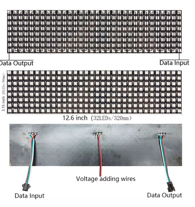

Os LEDs endereçáveis são uma nova geração de LEDs, pois incluem um chip controlador, geralmente o WS2812,
que permite acessar vários LEDs com um único pino digital, atribuindo um endereço a cada LED e fornecendo
uma comunicação por fio.
Os paineis de Leds endereçaveis são organizados em foma de zig zag de 8 em 8 leds formando uma matrix 8x32,
com duas podemos fomar um letreiro
A conexão é simples temos um GND, um 5v e um sinal de comunicação D0 que ligaremos no porta 6

#include
#include
const int receptorIR = 11;
IRrecv irrecv(receptorIR);
decode_results results;
const int numLeds = 8;
const int numCols = 64;
LedControl lc = LedControl(12, 11, 10, numLeds);
for (int i = 0; i < numLeds; i++) {
lc.shutdown(i, false);
lc.setIntensity(i, 8);
lc.clearDisplay(i);
}
}
void loop() {
if (irrecv.decode(&results)) {
Serial.println(results.value);
switch (results.value) {
case 0xFFA25D:
exibirMensagem("OLA");
break;
case 0xFF629D:
exibirMensagem("ARDUINO");
break;
case 0xFFE21D:
limparMatriz();
break;
}
irrecv.resume();
}
}
void exibirMensagem(char *mensagem) {
for (int i = 0; i < strlen(mensagem); i++) {
char c = mensagem[i];
exibirLetra(c);
delay(500);
}
}
void exibirLetra(char c) {
switch (c) {
case 'A':
lc.setRow(0, 0x01);
lc.setRow(1, 0x02);
lc.setRow(2, 0x04);
lc.setRow(3, 0x08);
lc.setRow(4, 0x10);
lc.setRow(5, 0x20);
lc.setRow(6, 0x40);
lc.setRow(7, 0x80);
break;
case 'B':
break;
}
}
void limparMatriz() {
for (int i = 0; i < numLeds; i++) {
lc.clearDisplay(i);
}
}
Desta foma terá o letreiro com a seguinte mensagem PROJETO LER TAMBEM E VIAJAR caso mudar a mensagem
basta mudar no campo acima Obs: não colocar acentos, desconfigura